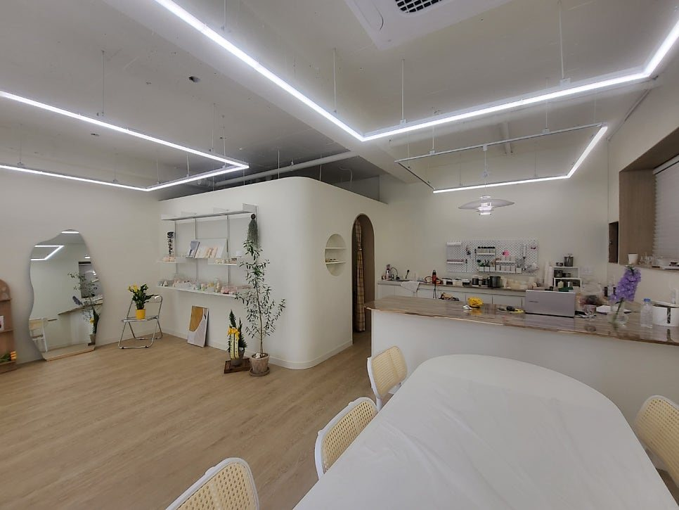

충남 천안 동남구 봉명동
봉명동
매장·카페 인테리어
천안 동남구 봉명동에서 상가, 카페, 음식점, 사무실 인테리어를 준비하고 계신가요? 케이디자인은 업종과 손님 동선, 운영 방식을 먼저 확인한 뒤 매장을 설계하고 시공합니다.

케이디자인이 시공한 상업공간 현장
같은 팀이 디자인하고 마감까지 시공했습니다.
공방 스튜디오
곡선 벽체, 원목 마루미용실 대기 공간
진열 선반, 파티션한식당 조경 홀
실내 조경 화단, 곡선 벽백석동 미용실 스타일링 존
스테인리스 거울, 포세린 타일봉명동에서 맡길 수 있는 공사
필요한 공정만 골라 부분 시공으로 맡겨도 됩니다.
- 외관 리모델링
- 카페, 음식점
- 헤어샵, 뷰티샵
- 학원, 병원
- 필라테스 스튜디오
- 상가, 매장
- 사무실
- 항목별 견적견적을 공정별로 나눠 드려 봉명동 현장 예산을 조정하기 쉽습니다.
- 한 팀이 끝까지설계와 시공을 같은 팀이 해서 처음 계획이 중간에 달라지지 않습니다.
- 대표 직접 상담전화를 받은 사람이 현장에 나가고, 공사 마무리까지 확인합니다.
상담 전에 함께 확인하는 내용
천안 동남구 봉명동 현장을 상담할 때 함께 확인하는 내용입니다.
관리하기 쉬운 마감재
손님이 많은 매장은 바닥과 벽이 금방 상합니다. 봉명동 매장 업종에 맞춰 오래 버티고 청소가 쉬운 마감재를 추천합니다.
조명으로 분위기 만들기
사진이 잘 나오는 매장은 대부분 조명이 좋습니다. 간접조명과 포인트 조명을 나눠 배치해 손님이 머무는 자리를 돋보이게 합니다.
소방·안전 기준 검토
봉명동 매장도 업종과 면적에 따라 소방 설비 기준이 달라질 수 있습니다. 설계할 때 함께 검토해 영업 신고에 문제가 없도록 준비합니다.
오픈 날짜에서 거꾸로 일정 잡기
봉명동 매장 오픈일이 정해졌다면 그 날짜를 기준으로 철거, 설비, 목공, 마감 일정을 거꾸로 배치합니다.
건물 공사 규정 확인
상가 건물마다 공사 가능 시간, 소음 규정, 외부 간판 규정이 다릅니다. 봉명동 현장도 착공 전 관리단 규정을 확인하고 일정에 반영합니다.
봉명동 인테리어 진행 과정
각 단계마다 확인할 내용을 먼저 안내합니다.
전화 상담
참고 사진이 있으면 함께 보내 주세요.
현장 실측
현장 치수와 배관·전기 위치를 확인합니다.
디자인과 견적
예산에 맞춰 조정할 항목을 함께 정합니다.
시공
공정마다 진행 상황을 공유합니다.
완공과 점검
마감 상태를 같이 둘러보고 인도합니다.
봉명동 현장 상담 안내
봉명동 상가 건물은 층과 위치에 따라 손님이 들어오는 방식이 다릅니다. 1층 매장은 외관과 입구를, 2층 이상 매장은 간판과 내부 분위기를 더 신경 써서 설계합니다.
천안은 서북구와 동남구로 나뉘며, 신도시 아파트 단지와 오래된 주거지, 역세권 상권이 함께 있는 도시입니다.
봉명동 매장 인테리어를 상담하면 케이디자인 대표 김명구가 직접 현장에 나가 실측합니다. 도면이 없어도 현장 치수로 설계를 시작할 수 있습니다.
자주 묻는 질문
봉명동 상가 인테리어도 시공하나요?
네. 천안 동남구 봉명동 상가, 카페, 음식점, 사무실 등 상업공간 인테리어를 설계부터 시공까지 진행합니다.
천안 다른 동네도 시공하나요?
네. 천안 전 지역과 천안, 아산, 당진, 평택의 상업공간 인테리어를 시공합니다.
어떤 업종의 매장을 시공했나요?
카페, 음식점, 주점, 헤어·뷰티샵, 필라테스 스튜디오, 공방, 상담 라운지, 매장 외관 리모델링 등을 시공했습니다.
봉명동 카페 인테리어도 가능한가요?
네. 카페 카운터, 좌석 배치, 조명, 외관까지 설계하고 시공합니다. 시공 사례의 카페 사진을 참고해 보세요.
- 상호
- 케이디자인
- 대표
- 김명구
- 시공 분야
- 주거공간, 상업공간 인테리어
- 시공 지역
- 충남 천안, 아산, 당진 / 경기 평택